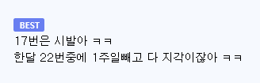

https://bbs.ruliweb.com/best/board/300143/read/76947573
1달 17번지각할때까지 봐준거보면
이새끼는 AI가 아니라 천사임
사람이였으면 5번지각했을때 이미 잘랐음

https://bbs.ruliweb.com/best/board/300143/read/76947573
1달 17번지각할때까지 봐준거보면
이새끼는 AI가 아니라 천사임
사람이였으면 5번지각했을때 이미 잘랐음

17번이면 AI도 "하 씨발 내가 AI인데 판단을 해도 되나..."하고 한달동안 존나 고민하고 짤랐다ㅋㅋㅋㅋ
더 일찍 자르지 않은 죄
지각 7번째에도 안짤리고 17번까지 간거 보면 일 못하는 ai네
AI도 참을 만큼 참아줬다. 이제 나가서 살아라.
야근하고 조금 늦게 나온거면 ㅇㅈ인데 칼퇴하면서 저런거면...
한달 17번은 시발아
저걸 봐준게 ai고장난거 아니냐? ㅋㅋ
1년도아니고 한달이면 ㅋㅋㅋ
회사 주차장에서 살았으면 지각 안하는데
아마 5번부터 사규에따라 퇴사조치 될 수 있다고 메일 존나 매일보냈을듯
부모님이 17명인거 아니면 불가능
AI가 한 달 동안 통계 내고 거기서 걸러낸 듯 ㅋㅋㅋ
AI가 인간이라고 ㅈㄴ 많이 봐준건데?
지각 17번? ㅋㅋㅋㅋㅋㅋㅋㅋㅋㅋㅋㅋㅋㅋㅋㅋ
ai 터미네이터 가설은 그냥 폐기하자
너무 늦게 짤랐네
17번이면 존나 많이 봐줬네